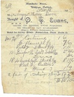
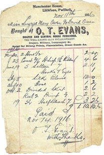

Manchester House – Drapers
Owen Evans ran a clothes shop in Manchester House. In the 1940s, Tudor Evans ran a shop here. He also sold clothes, socks etc. He was Dinah Olwen’s brother, who ran the Post. Tudor lived in Pwllheli and came to Llithfaen every day. Tudor also ran a bus company, with blue and cream buses, going from Edern, Caernarfon and Llithfaen, through Pistyll, Pemprys and on to Pwllheli. He bought two brand new Guilford buses. He later sold his buses to Crosville in 1937.
 Siop Tudor, next door to the Post
Siop Tudor, next door to the Post
Beti, Lena Pritchard’s sister, remembers that Tudor’s shop sold clothes and socks. In the 1940, Tudor lived in Pwllheli and travelled to Llithfaen every day. Tudor Evans ran a taxi company and a bus company. The buses travelled from Edern, Caernarfon and Llithfaen, through Pistyll and Pemprys and then to Pwllheli. He bought two brand new Guilfords. Tudor’s buses were blue and cream. He used to take children to school in Pentreuchaf. Tudor sold his buses to Crosville in 1937.
 Two reciepts from Manchester House, Llithfaen
